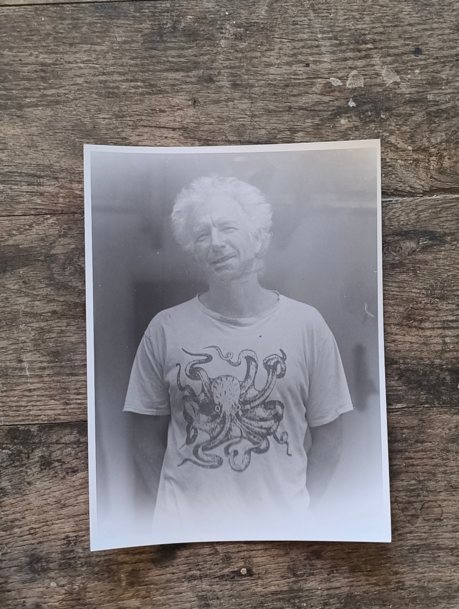
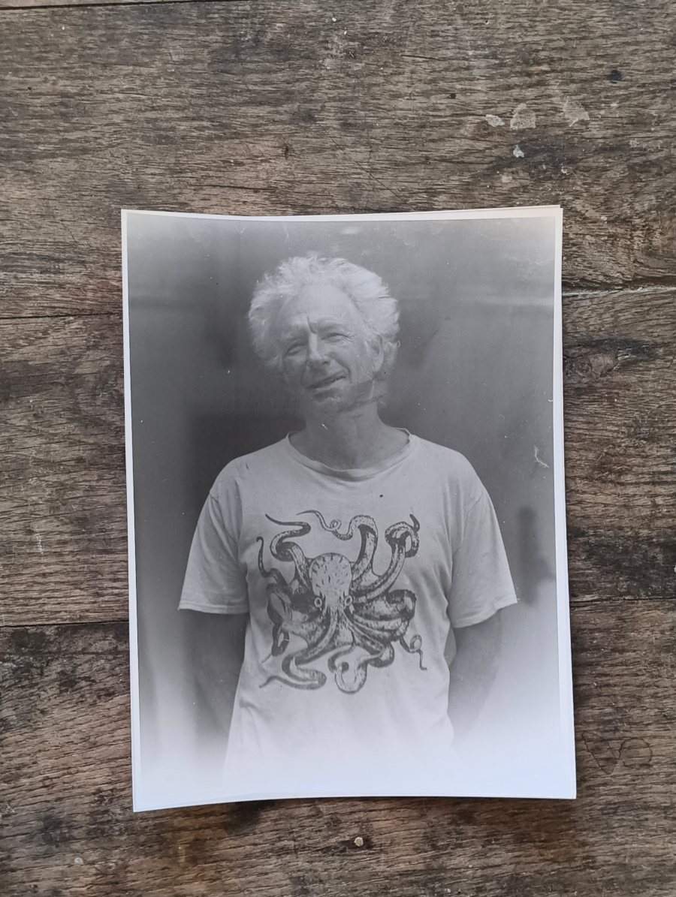
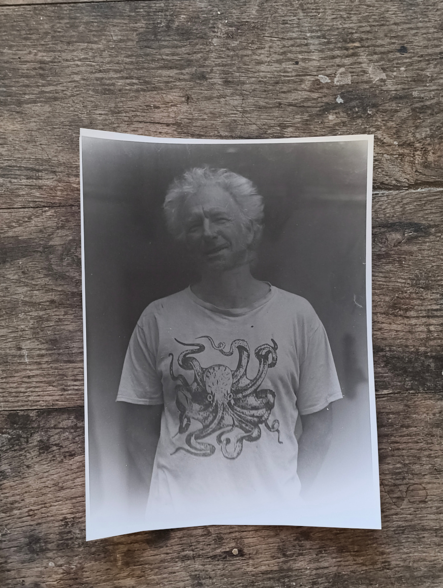

I am reluctant to use buzzwords, and sometimes I struggle to substitute them: the specifics of the virtual spaces in which people hang out over the internet (this app or that), fashionable and contentious habits in relation to technology(from brainrot to doomscroll), the division of society, politically or otherwise(from woke to tradwife), all the above escapes my text. Even 'space' or 'community' are contaminated terms. I feel that people are trapped in a language that is limited and that it influences reality and continuously deepening the one path that we are on.
This link is to an attempt to write something timeless: The Time Tunnel: a flash story .
a professional career
At 45 I started writing code professionally; It was my third career. Seven years in, instead of a predictable terrain, I navigate in the same misty cold air, boulders a plenty; when I manage to make out a path, it is a climb and a hard one, and when I don't, I move between the scattered rocks not knowing which way is forward.
In the summer of 2012, in what feels like a parallel universe (career number 2), I went on a short tour of the province, meeting local guitar makers. The result was "La Asociación de Lutieres de Cádiz", which we inaugurated in the small classroom of an old school. It was winter by then, and my neighbour Beatriz prepared a pumpkin stew for the guests. After the event one of the most enthusiastic members said he will not join as some of the attendants were not professional guitar makers, fair enough. Amateurism was in the heart of my approach. I was an amateur myself; I could only shrug.
The favourite bits of software of mine are written in technologies I don't command; my favourite photos I took by mistake; the best prints are scratched and dusty and can't be put for sale.
This is my friend Chris. The exposure in the shot was terrible, A professional technician would have told me that the film holder is leaking light and where exactly the fault is ( I know this because a professional technician did tell me just that... ) I placed three prints in sequence so the viewer can mentally create an averaged image in their mind:



A new science/fiction/art project we started (Sophie and I) is about plants stories, it has been brewing for a while and the shape is unclear, but thankfully art does not care about that, and we hope to get the first fanzine in a series printed in Risograph before Christmas. Let me know if you are interested in a copy. (reply to this newsletter or find the email at the footer in the website) It will be about plants and people, plants that have a story. Here is a gallery of photos of (and some thoughts about ) a tobacco plant that shot out in all its glory outside a house in the village. We crossed a neighbouring family on their afternoon walk, we all stopped by the plant, admiring its size. They said it shot up in a different spot in the village every year. I need to gather some testimonies.
The Links in the page will open the relevant pages that complement this newsletter in a separate tab